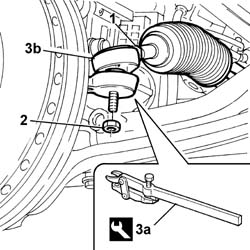

4110B10 Steering RODS - R.R. on vehicle - Check toe in separately
- Path
- Procedures > 41 STEERING > 4110 steering control and linkage > 4110B STEERING CONTROL LINKAGE > 4110B10 Steering RODS - R.R. on vehicle - Check toe in separately
- Kind
- repair procedure (removal / refitting; the operation number is the code)
- Applies to
- all engines; all production periods
- Interactive page
- https://sloeber94.github.io/elrnDB-lThss/en/#/78745
Applies to: all engines; all production periods
 Removing
Removing
 Refitting
Refitting- Position the vehicle on the lift.
See in Op. 4450B12 Front WHEELS (two) - R.R.
- Measure the length of the steering rods to be used in the refitting.
1. Loosen the nuts securing the steering rods.
2. Undo the nuts fixing the track rod end to the steering knuckle.
3. Separate the track rod end (3b) from the steering knuckle using the tool (3a).
 | Description | Code | Function |
|---|---|---|---|
3a | Head extraction | 1.847.038.000 | Head extraction |
- Undo the rods from the steering box and remove them

Applies to: all engines; all production periods
Refitting
Removing- Fit the steering box steering rods and tighten them to torque.
 | Value - daNm | Fastening | Component | Ø |
|---|---|---|---|---|
. | 5 | Locknut | ADJUSTABLE LINK BALL JOINTS | M14x.5 |
- Check that the length of the adjustable steering rods is the same as measured during the removal.
- Connect the steering track rod ends to the steering knuckles and tighten the fixing nut to torque.
| Value - daNm | Fastening | Component | Ø |
|---|---|---|---|---|
. | 4.5 | Nut | ADJUSTABLE LINK BALL JOINTS | M10 x 1.25 |
See in Op. 4450B12 Front WHEELS (two) - R.R.
- Lower the lift and remove the vehicle